|
Nintendo |
|||
| 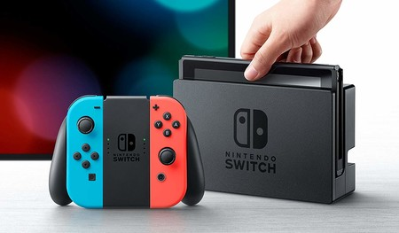
Nintendo Switch320€Nintendo Switch es la novena consola ... de videojuegos principal desarrollada por Nintendo y fue lanzada mundialmente el 3 de marzo de 2017. Especificaciones: Tamaño: 102mm x 239mm x 13,9 mm con los Joy-Con acoplados. Peso: 297 g. CPU/GPU: Procesador NVIDIA Tegra X1. Memoria: 4 GB de RAM Almacenamiento: 32GB. Prestaciones de comunicación: LAN inalámbrico (también por cable en modo TV)/Bluetooth 4.1. Salida de vídeo: 1920x1080, 60fps (EN modo TV a través de cable HDMI). Salida de audio: Compatible con PCM lineal 5.1 (en modo TV a través de cable HDMI). Altavoces: Estéreo. Terminal USB: Type-C (para cargar o conectar a la base). Conector de micrófono y auriculares: Salida estéreo. Ranura de tarjetas de juego: Sólo compatible con tarjetas de Switch. Ranura de tarjetas microSD: Compatible con microSD, microSDHC y microSDXC (con actualización) de hasta 2 TB. Sensores: Acelerómetro, giroscopio y sensor de brillo. Condiciones ambientales: Temperatura 5-35ºC/Humedad 20-80%. Batería interna: Batería de ion de litio con capacidad 4310 mAH no extraíble Duración de la batería: Entre 3 y 6 horas dependiendo del uso de Nintendo Switch. Tiempo de carga: 3 horas aproximadamente en modo espera. | 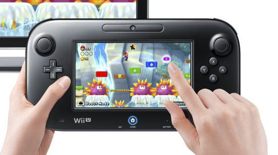
WII U140€Wii U es una consola perteneciente ... a la octava generación de videoconsolas, siendo la sexta de sobremesa creada por Nintendo. La consola fue lanzada el 18 de noviembre de 2012 en EEUU. Especificaciones: CPU: microprocesador tri-núcleo IBM Arquitectura Power de 45 nm. GPU: una AMD Radeon HD. Almacenamiento: Memoria flash interna: 32 GB, ampliable vía discos duros externos USB. Bandeja de carga de discos compatible con discos propietarios de alta densidad de 12 cm. Puertos y capacidades periféricas: Ranura para tarjetas SD y SDHC Puertos USB 2.0 (2 en el frontal y 2 en la parte trasera) Puerto para la barra de sensores Puerto para la señal de vídeo Puerto del cable de corriente Puerto HDMI 1.4 | 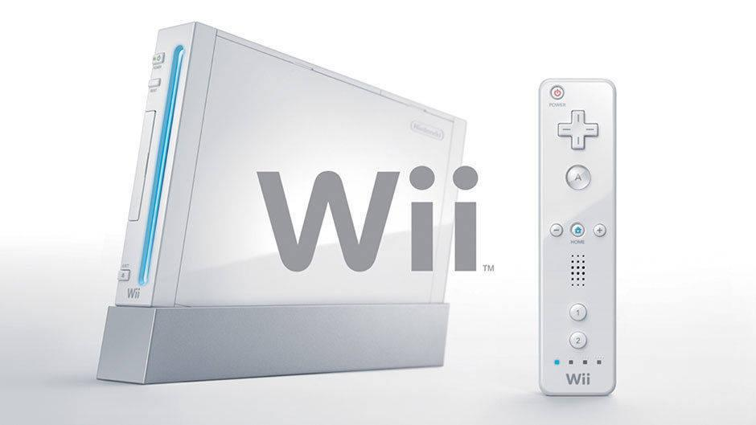
WII75€Wii es una videoconsola producida ... por Nintendo y estrenada el 19 de noviembre de 2006 en Norteamérica. Perteneciente a la séptima generación de consola. Especificaciones: Tamaño: 21,54 cm de largo, 15,7 cm de ancho y 4,4 cm de espesor. CPU: Unidad IBM PowerPC GPU: Chip ATI sistema LSI Memoria: 1T-SRAM. Sistema de carga: Slot-in de Panasonic para discos de 8 y 12cm (discos de Gamecube y Wii respectivamente). Almacenamiento: 512MB de memoria flash para guardar partidas y descargar contenidos. Ranura para tarjetas de memoria SD. 2 Ranuras para tarjetas de memoria de Gamecube. Comunicación: Wifi incorporado (IEEE802.11 b/g). Compatible con adaptador Wifi USB Ethernet. | 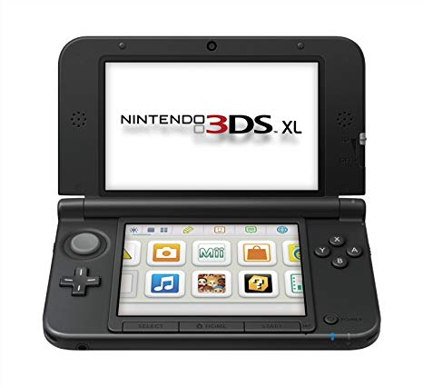
Nintendo 3DS100€Nintendo 3DS es una videoconsola ... portátil de Nintendo cuya atracción principal es poder mostrar gráficos en 3D sin necesidad de gafas especiales, gracias a la autoestereoscopia. Fue lanzada el 26 de febrero de 2011 en Japón. Especificaciones: Procesador: ARM11 Dual-Core a 266MHz. Almacenamiento: Nintendo recomienda el uso de SDs de hasta 32GB pero el 3DS soporta SDs de hasta 256GB sin problemas. GPU: DMP Pica200 a 133MHz56. Conectividad: 2.4 GHz Wi-Fi IR. Soporte: Tarjetas DS 512MB y Tarjetas 3DS 8GB. |
|
PlayStation |
|||
| 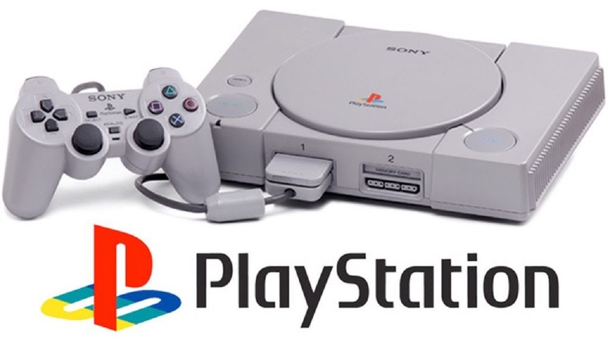
PlayStation 150€PlayStation (PS1) es una videoconsola ... de sobremesa de 32 bits lanzada por Sony Computer Entertainment el 3 de diciembre de 1994 en Japón. Especificaciones: Dimensiones: 270 mm (anchura) x 60 milímetors (altura) x 188 milímetros (fondo). Peso: 1,2 kg. Entrada/Salida: Una unidad lectora de discos CD-ROM. Par de puertos para mandos de control. Un puerto paralelo, ubicado en la parte trasera. Un puerto serie, ubicado en la parte trasera de la consola. Par de ranuras destinadas a las tarjetas de memoria. Una salida analógica de uso múltiple, RF, Compuesto, S-Video y RGBs. Una entrada de alimentación corriente alterna, de 220-240 V. Consumo: 10 vatios. | 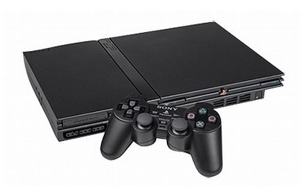
PlayStation 280€PlayStation 2 (PS2) es una videoconsola ... de sobremesa de 32 bits lanzada por Sony Computer Entertainment el 4 de marzo de 2000 en Japón. Especificaciones: Dimensiones: 182 mm (anchura) x 301 milímetors (altura) x 78 milímetros (fondo). Peso: 2 kg. Entrada/Salida: A/V Multi Out x1: Señales de vídeo y audio analógicas. Digital Out (Optical) x1. Puerto de mandos x2. Puerto para Tarjetas de memoria x2. iLink S400 x1. Puerto de infrarrojos x1. PCMCIA x1 (Modelos SCPH-1000X a SCPH-1800X). Expansión Bay x1. | 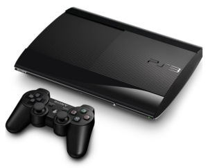
PlayStation 3100€PlayStation 3 (PS3) es una videoconsola ... de sobremesa de 64 bits lanzada por Sony Computer Entertainment el 11 de noviembre de 2006 en Japón. Especificaciones: Dimensiones: 230 mm (anchura) x 60 milímetors (altura) x 290 milímetros (fondo). Peso: 2,4 kg. Procesador: Cell Broadband Engine 3.1Ghz y 256 MB de RAM. Almacenamiento: Disco duro SATA velocidad de transferencia máxima 300 MB/s, tamaño 2,5" de 120 GB, también soporta disco duro del tipo SSD Unidad de estado sólido, aunque el firmware de la PS3 no soporta TRIM para estas unidades. GPU: NVIDIA RSX 550 MHz. Conectividad: Bluetooth 2.0, WiFi 802.11b/g (54 mbps), LAN (Gigabit Ethernet). | 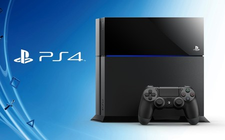
PlayStation 4300€PlayStation 4 (PS4) es una videoconsola ... de sobremesa de 64 bits lanzada por Sony Computer Entertainment el 15 de noviembre de 2013 en EEUU. Especificaciones: Dimensiones: 250 mm (anchura) x 70 milímetors (altura) x 250 milímetros (fondo). Peso: 2,6 kg. Almacenamiento: HDD 1 TB Ultimate Player / 500 GB Normal y Glacier White. GPU: AMD Radeon personalizada 1152 shaders @ 800 MHz (1,84 TFLOP, 4,2 TFLOP en la PS4 Pro)4. Conectividad: WiFi 802.11 b/g/n. Bluetooth: 2.1. USB: 3.0. Ethernet: 10/100/1000. |
|
Xbox |
|||
| 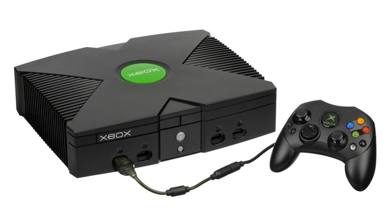
Xbox50€Xbox es una videoconsola de ... sobremesa de sexta generación producida por Microsoft. Fue lanzada el 15 de noviembre de 2001 en EEUU. Especificaciones: Procesador: Intel Coppermine Core 32-bit @ 733 MHz Almacenamiento: Disco duro, Tarjetas de memoria. GPU: Nvidia MPCX 256-bit @ 233 MHz Soporte: CD-R 700MB DVD 4,7GB | 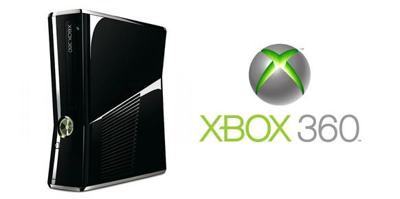
XBOX360150€Xbox 360 es la videoconsola ... de sobremesa de la marca Xbox producida por Microsoft. Fue lanzada el 22 de noviembre de 2005 en EEUU. Especificaciones: Procesador: 3.2 GHz (PowerPC) Tri-Core IBM Xenon 512 MB de RAM. Almacenamiento: Disco duro extraíble de 250 GB, tarjeta de memoria de 64. GPU: ATI/AMD Xenos 500 MHz Conectividad: Modelo S wireless, 5 puertos USB 2.0, Wi-Fi 802.11a/b/g/n, receptor IR, 100 Mbit Ethernet, Puerto auxiliar. Vídeo: SD: 480i, 480p HDTV: 720p, 1080i, 1080p Soporte: HD DVD, DVD-DL, Disco compacto.(CD) | 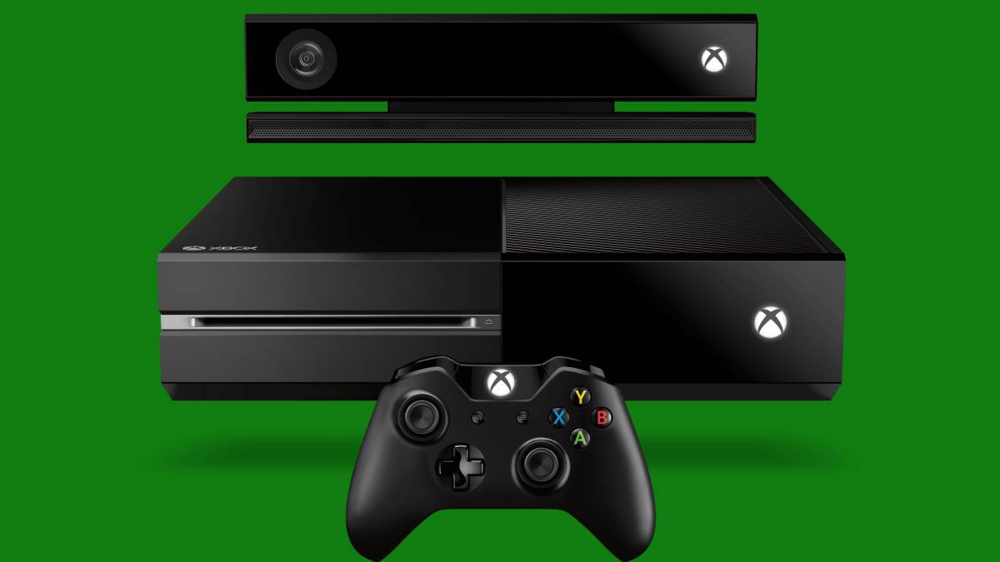
Xbox One200€Xbox One es la tercera videoconsola ... de sobremesa de la marca Xbox, producida por Microsoft. Forma parte de las videoconsolas de octava generación, fue presentada el 21 de mayo de 2013 en EEUU y Europa. Especificaciones: Procesador: AMD Jaguar x86-64 a 1,75 GHz (8 núcleos)1. Almacenamiento: Disco duro SATA 2,5" de 1TB. GPU: AMD Radeon GCN DirectX 12 personalizada por Microsoft con 768 shaders @ 853 MHz (1,31 TFLOP/s). Conectividad: USB 3.0 Protocolo S/PDIF High-Definition Multimedia Interface Gigabit Ethernet Ver y modificar los datos en Wikidata | 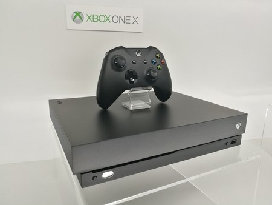
Xbox One X350€Xbox One X producida por ... Microsoft es una actualización de hardware de Xbox One con el nombre de "Xbox One X". La nueva consola lanzada el 7 de noviembre de 2017. Especificaciones: CPU: 8 núcleos con frecuencia de 2,3 GHz. GPU: 1.172 MHz de frecuencia de reloj, arquitectura Polaris y 6 TFLOPS de potencia. Memoria: 12 GB de memoria GDDR5 a 6,8 GHz con un ancho de banda de 326 GB/s. Almacenamiento: 1 TB de disco duro. Puertos: HDMI 1.4b de entrada HDMI 2.0b de salida 1 x USB 3.0 frontal 2 x USB 3.0 traseros Receptor IR Salida audio digital SPDIF Puerto Gigabit Ethernet Conectividad inalámbrica: WiFi 802.11ac Dual Band (5 GHz / 2.4 GHz). |